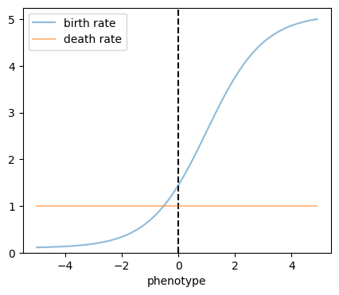
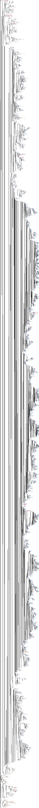
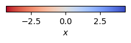
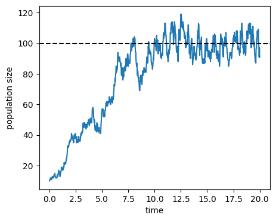
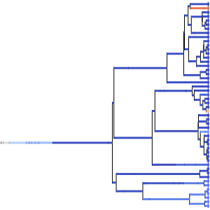
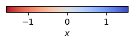
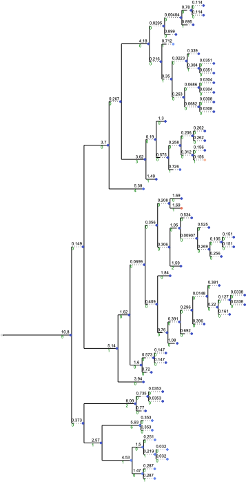

Germinal center replay modeling#
import numpy as np
import matplotlib.pyplot as plt
import ete3
from gcdyn import bdms, gpmap, mutators, poisson, utils
from experiments import replay
Parameters#
Genotype-phenotype map based on additive DMS binding effects
dms = replay.dms()
gp_map = gpmap.AdditiveGPMap(dms["affinity"], nonsense_phenotype=dms["affinity"].min().min())
assert gp_map(replay.NAIVE_SEQUENCE) == 0
Response functions
birth_response = poisson.SigmoidResponse(xscale=1.0, xshift=1.0, yscale=5.0, yshift=0.1)
# birth_response = poisson.ConstantResponse(1.0)
death_response = poisson.ConstantResponse(1.0)
mutation_response = poisson.SequenceContextMutationResponse(replay.mutability(), mutation_intensity=1.0)
# NBVAL_IGNORE_OUTPUT
x_grid = np.arange(-5, 5, 0.1)
plt.figure(figsize=(5, 4))
plt.axvline(0, color="k", linestyle="--")
plt.plot(x_grid, birth_response.λ_phenotype(x_grid), label="birth rate", alpha=0.5)
plt.plot(x_grid, death_response.λ_phenotype(x_grid), label="death rate", alpha=0.5)
# plt.fill_between(x_grid, mutator.prob(0, x_grid), color="grey", label="distribution of phenotypic\neffects of mutations", alpha=0.5)
plt.xlabel('phenotype')
# plt.ylabel('event rate')
plt.ylim(0, None)
plt.legend()
plt.show()

Mutator
mutator = mutators.SequencePhenotypeMutator(mutators.ContextMutator(mutability=replay.mutability(),
substitution=replay.substitution()),
gp_map)
Simulate#
Initialize tree root
tree = bdms.TreeNode()
tree.x = gp_map(replay.NAIVE_SEQUENCE)
tree.sequence = replay.NAIVE_SEQUENCE
tree.sequence_context = replay.seq_to_contexts(replay.NAIVE_SEQUENCE)
Random seed
rng = np.random.default_rng(seed=0)
Parameters
time = 20
capacity = 100
init_population = 10
min_survivors = 50
for iter in range(1000):
try:
tree.evolve(
time,
birth_response,
death_response,
mutation_response,
mutator,
capacity=capacity,
init_population=init_population,
min_survivors=min_survivors,
capacity_method="death",
birth_mutations=False,
seed=rng,
verbose=False,
)
print(f"try {iter + 1} succeeded, tip count: {len(tree)}")
break
except bdms.TreeError as e:
print(f"try {iter + 1} failed, {e}", flush=True)
continue
try 1 succeeded, tip count: 3710
Check that node sequences and sequence contexts are consistent
for node in tree.traverse():
for a, b in zip(replay.seq_to_contexts(node.sequence), node.sequence_context):
assert a == b
Check that node times and branch lengths are consistent
for node in tree.iter_descendants():
assert np.isclose(node.t - node.up.t, node.dist)
# NBVAL_SKIP
tree.render("x", "%%inline")


Population size history
t_grid = np.linspace(0.001, time, 1000)
n_t = [len(tree.slice(t)) for t in t_grid]
plt.figure(figsize=(5, 4))
plt.plot(t_grid, n_t)
plt.axhline(capacity, color="k", linestyle="--")
plt.xlabel("time")
plt.ylabel("population size")
plt.show()

Sample survivors
tree.sample_survivors(n=50, seed=rng)
Prune extinct or unobserved subtrees
tree.prune()
Mean affinity of sampled cells
np.mean([leaf.x for leaf in tree])
1.3670410000000002
Render the pruned tree
# NBVAL_SKIP
ts = ete3.TreeStyle()
ts.branch_vertical_margin = 1.0
ts.show_leaf_name = False
ts.show_scale = False
tree.render("x", "%%inline", h=300, w=300, tree_style=ts)


Remove unifurcating mutation event nodes and render
tree.remove_mutation_events()
# NBVAL_SKIP
tree.render("x", "%%inline")

# Optionally write out tree and sequences.
if False:
with open("tree.nwk", "w") as fp:
fp.write(tree.write()+"\n")
utils.write_leaf_sequences_to_fasta(tree, "seqs.fasta", naive=replay.NAIVE_SEQUENCE)